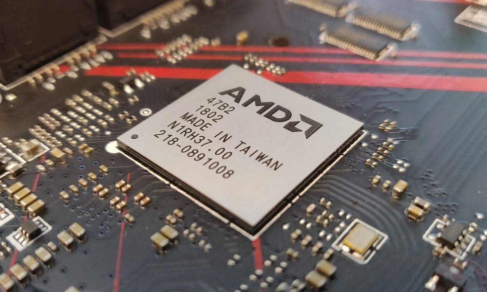
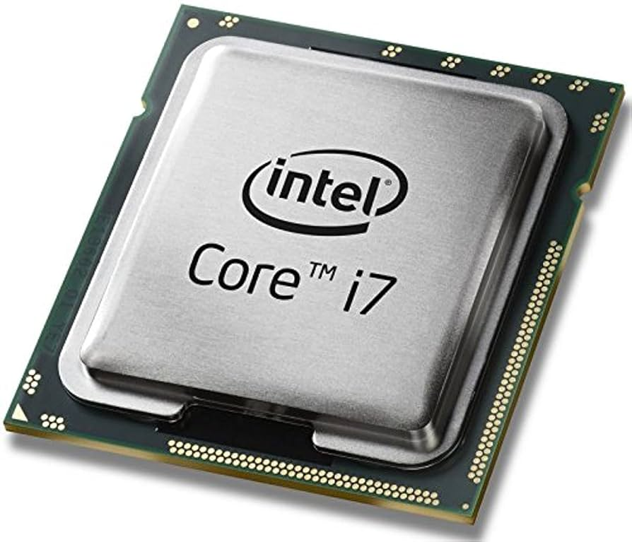
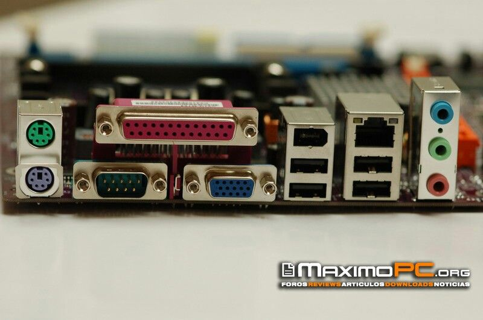
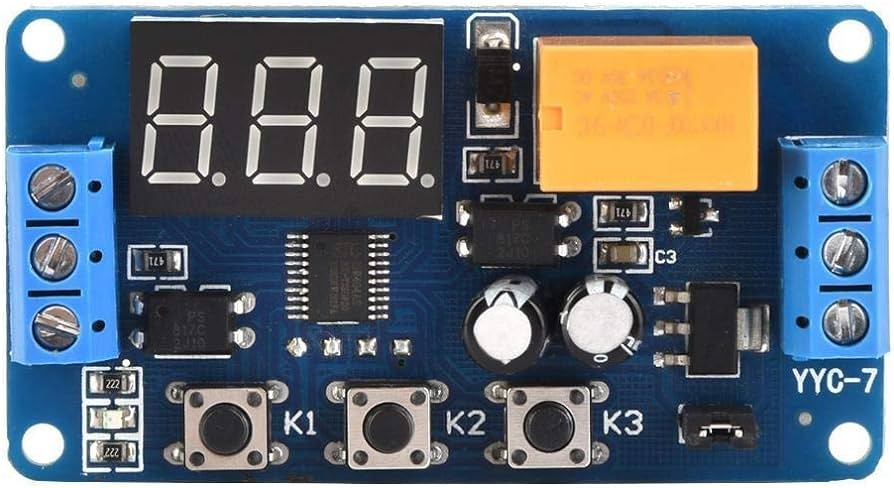
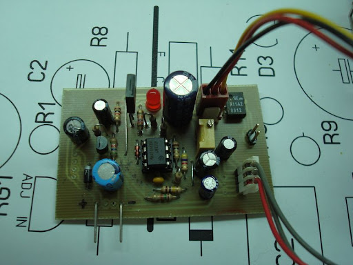
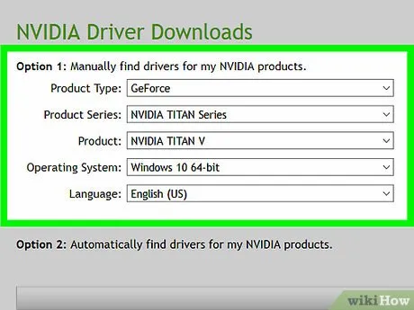
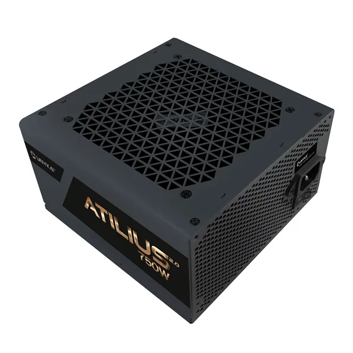

3.1 Chip set.
Un chipset es el conjunto de circuitos integrados diseñados con base en la
arquitectura de un procesador (en algunos casos, diseñados como parte integral de esa arquitectura),
permitiendo que ese tipo de procesadores funcionen en una placa base. Sirven de puente de
comunicación con el resto de componentes de la placa, como son la memoria, las tarjetas de
expansión, los puertos USB, ratón, teclado, etc. Las placas base modernas suelen incluir dos
integrados, denominados puente norte y puente sur, y suelen ser los circuitos integrados más grandes
después de la GPU y el microprocesador. Las últimas placa base carecen de puente norte, ya que los
procesadores de última generación lo llevan integrado.
Funcionamiento: El chipset es el que hace posible que la placa base funcione como eje del sistema,
dando soporte a varios componentes e interconectándolos de forma que se comuniquen entre ellos
haciendo uso de diversos buses. Es uno de los pocos elementos que tiene conexión directa con el
procesador, gestiona la mayor parte de la información que entra y sale por el bus principal del
procesador, del sistema de vídeo y muchas veces de la memoria RAM. En el caso de los computadores
PC, es un esquema de arquitectura abierta que establece modularidad: el chipset debe tener
interfaces estándar para los demás dispositivos. Esto permite escoger entre varios dispositivos
estándar, por ejemplo, en el caso de los buses de expansión, algunas tarjetas madre pueden tener bus
PCI-Express y soportar diversos tipos de tarjetas de distintos anchos de bus (1x, 8x, 16x).

3.1.1 Unidad de procesamiento
La unidad central de procesamiento (siglas en inglés Central Processing Unit) es
el hardware dentro de una computadora u otros dispositivos programables. Su trabajo es interpretar
las instrucciones de un programa informático mediante la realización de las operaciones básicas
aritméticas, lógicas y externas (provenientes de la unidad de entrada/salida). Su diseño y avance ha
variado notablemente desde su creación, aumentando su eficiencia y potencia, y reduciendo aspectos
como el consumo de energía y el costo.
Los componentes de la CPU son: Unidad aritmético lógica
(ALU): Realiza operaciones aritméticas y lógicas. Unidad de control (CU): Dirige el tráfico de
información entre los registros de la CPU y conecta con la ALU las instrucciones extraídas de la
memoria. Registros internos: No accesibles (de instrucción, de bus de datos y bus de dirección) y
accesibles de uso específico (contador programa, puntero pila, acumulador, flags, etc.) o de uso
general.

3.1.2 Controlador del bus
El controlador del bus se encarga de la frecuencia de funcionamiento y las señales de sincronismo, temporización y control. Está ubicado en un chip en la placa base. El bus es la vía a través de la que se van a transmitir y recibir todas las comunicaciones, tanto internas como externas, del sistema informático. El bus es solamente un dispositivo de transferencia de información entre los componentes conectados a él, no almacena información alguna en ningún momento. Los datos, en forma de señal eléctrica, sólo permanecen en el bus el tiempo que necesitan en recorrer la distancia entre los dos componentes implicados en la transferencia.

3.1.3 Puerta de entrada/salida
Un puerto de E/S es un enchufe en una computadora al que se conecta un cable. El
puerto conecta la CPU a un dispositivo periférico a través de una interfaz de hardware o a la red a
través de una interfaz de red. En otras palabras, un puerto de E/S es un punto de conexión que actúa
como interfaz entre la computadora y dispositivos externos como mouse, impresora, módem, etc. Estos
son de dos tipos: Puerto interno: Conecta la placa base a dispositivos internos como unidad de disco
duro, unidad de CD, módem interno, etc. Puerto externo: Conecta la placa base a dispositivos
externos como módem, mouse, impresora, unidades flash, etc.
Tipos de puertos: Puerto serial: Los puertos seriales transmiten datos secuencialmente un bit a la
vez. Por lo tanto, solo necesitan un
cable para transmitir 8 bits. Sin embargo, también los hace más lentos. Los puertos serie suelen ser
conectores macho de 9 o 25 pines. También se conocen como puertos COM (comunicación) o puertos
RS323C. Puerto USB: USB son las siglas de Universal Serial Bus. Es el estándar de la industria para
la conexión de datos digitales de corta distancia.
El puerto USB es un puerto estandarizado para
conectar una variedad de dispositivos como impresora, cámara, teclado, altavoz, etc. Puerto PS/2:
PS/2 son las siglas de Personal System/2. Es un puerto estándar hembra de 6 pines que se conecta al
cable mini-DIN macho. IBM introdujo PS/2 para conectar el mouse y el teclado a las computadoras
personales.

Este puerto ahora está casi obsoleto, aunque algunos sistemas compatibles con IBM
pueden
tener este puerto. Puerto de infrarrojos: El puerto de infrarrojos es un puerto que permite el
intercambio inalámbrico de datos en un radio de 10 m. Dos dispositivos que tienen puertos
infrarrojos se colocan uno frente al otro para que los haces de luces infrarrojas se puedan utilizar
para compartir datos. Puerto Bluetooth: Bluetooth es una especificación de telecomunicaciones que
facilita la conexión inalámbrica entre teléfonos, computadoras y otros dispositivos digitales a
través de una conexión inalámbrica de corto alcance.
El puerto Bluetooth permite la
sincronización
entre dispositivos habilitados para Bluetooth. Puerto FireWire: FireWire es el estándar de interfaz
de Apple Computer para permitir la comunicación de alta velocidad mediante bus serie. También se
llama IEEE 1394 y se usa principalmente para dispositivos de audio y video como videocámaras
digitales.
3.1.4 Controlador de interrupciones
El controlador de interrupciones es un módulo que tiene por función gestionar las interrupciones de
entrada/salida para el procesador. Esto ahorra diseñar lógica y añadir patitas al procesador.
También proporciona flexibilidad porque permite idealmente, gestionar un número ilimitado señales de
interrupción (favoreciendo la expansión del sistema de entrada/salida).
Ciclo de reconocimiento de interrupción
Tras la activación de una línea IR, el controlador activa la salida INTR señalándole a la CPU la
existencia de una interrupción activada.
Al recibir la señal, el procesador da un pulso en su salida INTA indicando que comienza un ciclo de
reconocimiento de interrupción.
Al recibir el controlador el pulso por su entrada INTA comienza a arbitrar las interrupciones
recibidas y selecciona la más prioritaria.
Se emite un segundo pulso por la línea INTA del procesador (o controlador de bus) que utiliza el
controlador para depositar en el bus el vector correspondiente a la interrupción de mayor prioridad.
El procesador obtiene la dirección de la rutina de interrupción a partir de este dato y salta a
ella. Almacena el registro de flags y la dirección de retorno, deshabilita las interrupciones y
comienza a ejecutar la rutina.

3.1.5 Controlador de Acceso Directo a Memoria
("DMA Controller"), que permite realizar estos intercambios sin apenas intervención del procesador.
En los XT estaba integrado en un chip 8237A que proporcionaba 4 canales de 8 bits (puede mover solo
1 Byte cada vez); sus direcciones de puerto son 000–00Fh. Posteriormente en los AT se instalaron dos
de estos integrados y las correspondientes líneas auxiliares en el bus de control. En contra de lo
que podría parecer, el resultado no fue disponer de 8 canales, porque el segundo controlador se
colgó en “Cascada” de la línea 4 del primero.
Los canales del El mecanismo de acceso directo a
memoria está controlado por un chip específico, el DMAC segundo DMAC está asignado a las direcciones
0C0–0DFh y son de 16 bits. Pueden mover 2 Bytes (de posiciones contiguas) cada vez. Cada canal tiene
asignada una prioridad para el caso de recibirse simultáneamente varias peticiones (los números más
bajos tienen prioridad más alta). Pueden ser utilizados por cualquier dispositivo que los necesite
(suponiendo naturalmente que esté diseñado para soportar este modo de operación). Cada sistema los
asigna de forma arbitraria, pero hay algunos cuya asignación es estándar.

3.1.6 Circuitos de Temporización
El circuito electrónico que más se utiliza tanto en la industria como en
circuitería comercial, es el circuito temporizador o de retardo, dentro de la categoría de
temporizadores, cabe destacar el más económico y también menos preciso consistente en una
resistencia y un condensador, a partir de aquí se puede contar con un sinfín de opciones. Un
temporizador básicamente consiste en un elemento que se activa o desactiva después de un tiempo
preestablecido. De esta manera podemos determinar el parámetro relacionado con el tiempo que ha de
transcurrir para que el circuito susceptible de temporizarse, se detenga o empiece a funcionar o
simplemente cierre un contacto o lo abra.

Se encuentra en la placa base de la PC y que es capaz de
mantener una cuenta de tiempo basada en el reloj de la computadora. Puede usarse para calcular el
intervalo entre dos mediciones de tiempo o para generar pausas. Este chip tiene la capacidad de
realizar diferentes funciones de conteo. Es útil para medir el tiempo que dura cierto proceso o para
mantener actualizadas la hora del día y la fecha si se deja la PC conectada y encendida.
3.1.7 Circuitos de Control
Es una red secuencial que acepta un código que define la operación que se va a ejecutar y luego prosigue a través de una secuencia de estados, generando una correspondiente secuencia de señales control. Estas señales de control incluyen el control de lectura-escritura y señales de dirección de memoria válida en el bus de control del sistema. Otras señales generadas por el controlador se conectan a la ALU y a los registros internos del procesador para regular el flujo de información en el procesador y desde los buses de dirección y de datos del sistema.
3.1.8 Controladores de Video
La tarjeta de video, (también llamada controlador de video), es un componente
electrónico requerido para generar una señal de video que se manda a una pantalla de video por medio
de un cable. La tarjeta de video se encuentra normalmente en la placa de sistema de la computadora o
en una placa de expansión. La tarjeta gráfica reúne toda la información que debe visualizarse en
pantalla y actúa como interfaz entre el procesador y el monitor; la información es enviada a éste
por la placa luego de haberla recibido a través del sistema de buses.

Una tarjeta gráfica se
compone, básicamente, de un controlador de video, de la memoria de pantalla o RAM video, y el
generador de caracteres, y en la actualidad también poseen un acelerador de gráficos. El controlador
de video va leyendo a intervalos la información almacenada en la RAM video y la transfiere al
monitor en forma de señal de video; el número de veces por segundo que el contenido de la RAM video
es leído y transmitido al monitor en forma de señal de video se conoce como frecuencia de refresco
de la pantalla.
3.2 Aplicaciones
En informática, un periférico de entrada/salida o E/S (en inglés: input/output o
I/O) es aquel tipo de dispositivo periférico de un computador capaz de interactuar con los elementos
externos a ese sistema de forma bidireccional, es decir, que permite tanto que sea ingresada
información desde un sistema externo, como emitir información a partir de ese sistema. Los
Dispositivos Periféricos de entrada son todos aquellos dispositivos que permiten introducir datos o
información en una computadora para que esta los procese u ordene.
Funciones:
Un periférico de E/S es el que se utiliza para ingresar (E) datos a la computadora, y luego de ser
procesados por la unidad central de procesamiento (CPU), genera la salida (S) de información. Su
función es leer o grabar, permanente o virtualmente, todo aquello que se haga con la computadora,
para que pueda ser utilizado por los usuarios u otros sistemas.
Tipos:
Dispositivos o periféricos de comunicación entre computadoras
Dispositivos de almacenamiento de datos
3.2.1 Entrada/Salida
Conforme la tecnología avanza, más datos se van generando, por lo que es
necesario contar con un almacenamiento eficiente para poder guardar toda esa información y acceder a
ellos. El almacenamiento de datos ha cambiado mucho, desde los sistemas de disco, que muy
probablemente se sigan utilizando, pero de una forma más digital: hoy se encuentran conectados a una
red y son definidos por un software.
Almacenamiento en Sistemas Informáticos:
Un dispositivo de almacenamiento es un hardware que se utiliza principalmente para almacenar datos.
Cada computadora de escritorio, computadora portátil, tablet y smartphone tendrán algún tipo de
dispositivo de almacenamiento en su interior y también puedes obtener unidades de almacenamiento
externo independientes que se pueden utilizar en varios dispositivos.
Tipos de Almacenamiento:
Unidades de discos duros (HDD)
Discos de estado sólido (SSD)
3.2.2 Almacenamiento
El almacenamiento en una PC se refiere a la capacidad de guardar y recuperar información, archivos, aplicaciones y otros datos. Es uno de los componentes más importantes de una computadora. Aquí tienes algunas opciones comunes de almacenamiento:
- Unidad de disco duro (HDD):
Estas unidades utilizan discos magnéticos giratorios para almacenar datos. Son más lentas que las SSD pero ofrecen mayor capacidad a un costo más bajo. - Unidad de estado sólido (SSD):
Las SSD no tienen partes móviles y son más rápidas que las HDD. Aunque son más costosas, ofrecen un rendimiento superior y tiempos de carga más rápidos. - Almacenamiento híbrido (HDD + SSD):
Algunas computadoras combinan ambos tipos de almacenamiento para obtener un equilibrio entre capacidad y velocidad.
3.2.3 Fuentes de alimentacion
Una fuente de alimentación es un componente esencial de cualquier dispositivo
electrónico ya que es ella quien se encarga de darle vida. En cualquier equipo, por pequeño que sea,
siempre hay una fuente de alimentación, aunque no la veamos. En los ordenadores de sobremesa, la
fuente de alimentación se encuentra generalmente en la parte inferior de la torre (en cajas antiguas
se encuentra en la superior), y muchas cajas de ordenador optan por incorporar un compartimento para
separarla del resto y ya de paso ocultar todos los cables salientes de ella.
Una fuente de
alimentación sirve para dar energía a un dispositivo electrónico.

Siguiendo con el tema de los
ordenadores de sobremesa, la fuente de alimentación da energía a la placa base, CPU, tarjetas
gráficas, HDDs, SSDs, ventiladores, lectores de CDs. En resumen, alimenta a todo lo que necesite
energía, para ello hace uso de diferentes tipos de cables. Las fuentes de alimentación proporcionan
energía a los SSD y HDD mediante conectores SATA de energía, y a los ventiladores mediante
conectores molex de 3 o 4 pines o bien mediante la propia placa base (que es alimentada con el
conector de 24 pines ATX). De esta manera, todos los componentes reciben energía de la fuente de
alimentación.
3.3 Ambientes de servicio
El negocio de proveer servicios de datos es mucho más complejo que la forma en la que se dan los tradicionales servicios, los primeros requieren de nuevos conocimientos y modelos de negocio, que con frecuencia se termina involucrando o necesitando la colaboración de terceras empresas. Por lo que se hace necesario que los operadores tradicionales transformen su negocio para ofrecer los servicios de datos con los niveles de servicio que el mercado exige.
3.3.1 Negocios
Definitivamente, la tecnología en general ha sido la causa principal y la acción más directa para la transformación del trabajo de las organizaciones en la posguerra del siglo XX. Tanto los bienes de capital "duros" (computadores, teléfonos, videos, facsímiles, grabadoras, etc.), como los programas y sistemas de información y comunicación en general, han incrementado enormemente la productividad y eficiencia de las organizaciones. Tenemos como ejemplos los siguientes: bases de datos en redes de todo orden y topología, sistemas de reservaciones en aerolíneas, sistemas de contabilidad y nóminas, archivos clínicos en centros de salud, sistemas de conmutación electrónica y un sin número de otras aplicaciones a procesos administrativos.
3.3.2 Industrias
La industrialización de los servicios de tecnología de información va a redefinir el mercado en términos de como las organizaciones evalúan, compran y seleccionan los servicios y como los vendedores desarrollan y establecen precios de los servicios. Para lograr esta estandarización, se requiere un enfoque hacia las soluciones genéricas y esto debe ser responsabilidad de los proveedores, que deben de desarrollar, operar y administrar el resultado de estos genéricos de TI. Aunque los servicios de TI están en proceso de madurez, la madurez de la industria se ha incrementado en aspectos evidentes, como la forma en que los servicios son implementados y administrados.
3.3.3 Comercio Electronico
El desarrollo de estas tecnologías y de las telecomunicaciones ha hecho que los intercambios de datos crezcan a niveles extraordinarios, simplificándose cada vez más y creando nuevas formas de comercio, y en este marco se desarrolla el Comercio Electrónico. Se considera “Comercio Electrónico” al conjunto de aquellas transacciones comerciales y financieras realizadas a través del procesamiento y la transmisión de información, incluyendo texto, sonido e imagen.